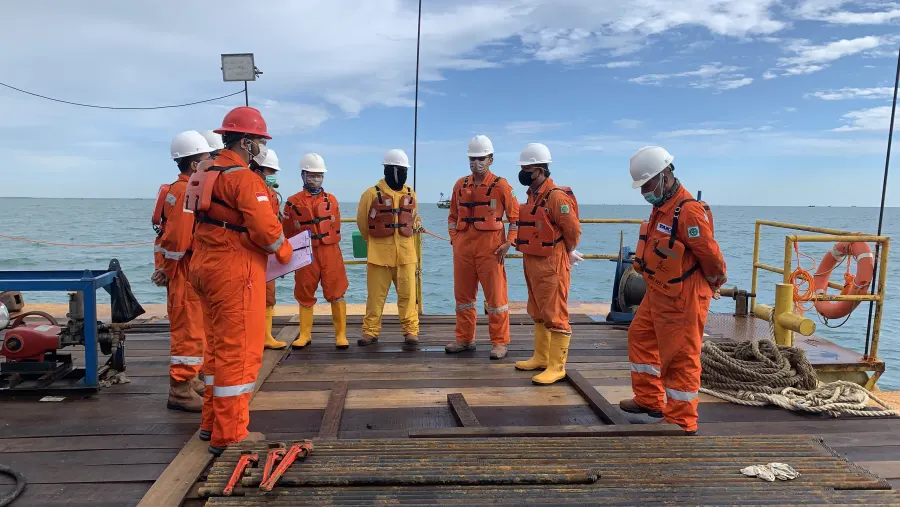
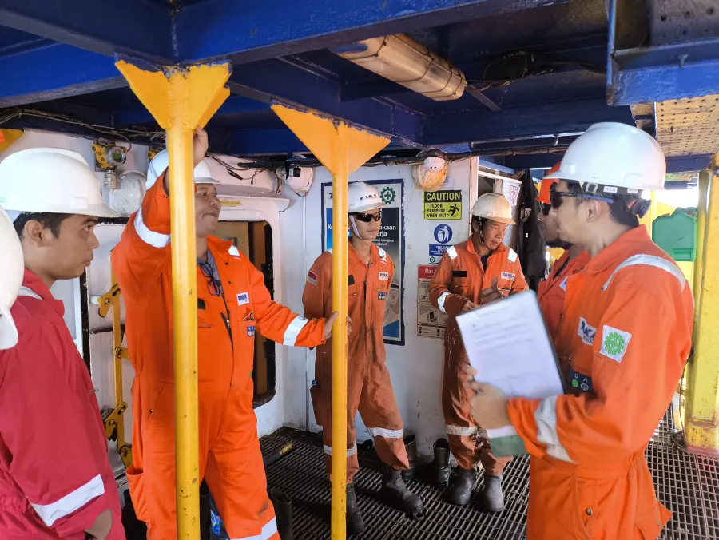

Recorded across office and project man-hours up to June 2026.
Health, Safety & Environmental
HSE performance and field programs, reviewed year by year.
HSE performance reflects how THI maintains safe field execution, environmental responsibility, and disciplined operational control across office and project activities.
01 HSE Performance
January - June 2026
Zero LTI and zero environmental damage.
January to June 2026 closed with 384,561 safety hours across controlled office and project man-hours.
No lost-time incident recorded during the reporting period.
No environmental damage case recorded during the reporting period.
Monthly man-hours
384,561 YTD
Report context
Office man-hours: 86,688. Project man-hours: 297,874. Performance: 100%.
Open HSE Performance Report 2026 ↗Source: HSE Performance Report 2026, period January - June, approved in Bandung on 1 June 2026.
02 HSE Programs

Program control
Practical HSE routines before, during, and after field execution.
Induction & toolbox talk
Brief personnel on site rules, work method, emergency response, and day-to-day activity risks.
JSA and permit control
Review hazards, define controls, and align permits before critical work begins.
PPE and worksite inspection
Check PPE compliance, housekeeping, access control, and safe work conditions on site.
Emergency drill
Prepare crews for evacuation, medical response, fire response, man-overboard, and communication drills.
Lifting and equipment assurance
Verify lifting gear, certificates, load testing, critical equipment condition, and operator readiness.
Environmental control
Manage waste, spill prevention, deck cleanliness, fuel handling, and environmental protection actions.
03 HSE Documentation
Field evidence
Documentation from briefing, deck activity, inspection, and vessel operation.


